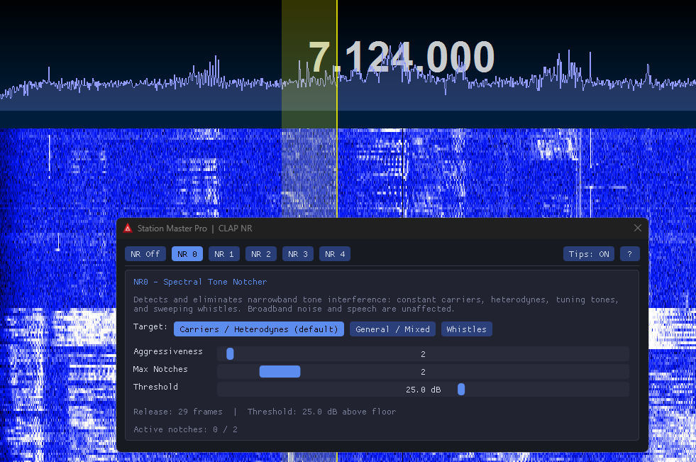
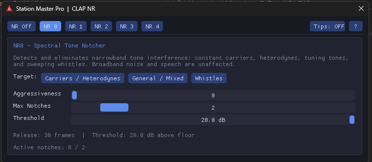
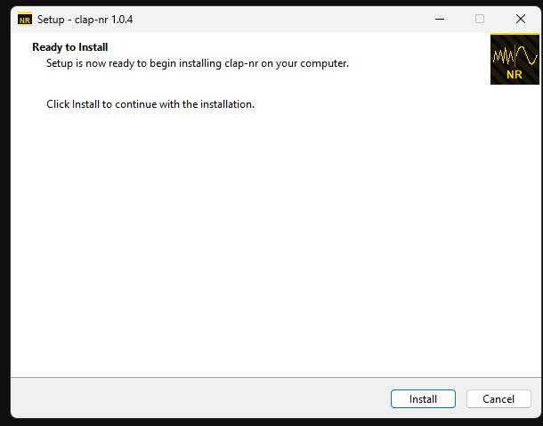
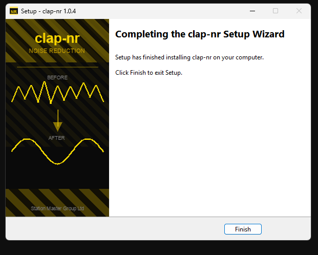

What is clap-nr?
clap-nr brings the high-quality DSP noise-reduction algorithms found in established amateur radio software-defined radio stacks to any host application that supports the CLAP open plugin standard.
The plugin was written primarily to support Station Master Pro by Stuart E. Green (G5STU), an advanced amateur radio application with native CLAP plugin support. The broader goal is to make professional-grade noise-reduction available to the wider amateur radio community without locking it to any single radio application.
This plugin is not standalone - it must be loaded by a host application that supports the CLAP plugin format.
Get clap-nr
Select your operating system below for step-by-step installation instructions.


-
Download the Windows installer
Click the Download button at the top of this page. Your browser will download a
.exeinstaller file. -
Run the installer
Double-click the downloaded
.exefile. Windows may show a security prompt - click More info then Run anyway to continue. -
Follow the setup wizard
Click through the setup steps. The installer handles everything - no manual file copying required.

Installer ready to install - click Install to continue
Installation complete -
Open your host application
Start Station Master Pro (or any CLAP-compatible host). The plugin will appear as clap-nr in the plugin list.
-
Load clap-nr and select a noise-reduction mode
Add the plugin to your audio chain, choose a noise-reduction tab (NR1 through NR4, or NR0 for the auto-notch), and adjust the controls to suit your signal.
To uninstall: Open Add or remove programs in Windows Settings, search for clap-nr, and click Uninstall.
-
Download the macOS installer
Click the Download button at the top of this page. Your browser will download a
.pkginstaller file. -
Open the installer
Double-click the downloaded
.pkgfile and follow the on-screen steps. macOS may ask for your administrator password to install the plugin system-wide.If macOS shows a security warning, go to System Settings → Privacy & Security and click Open Anyway.
-
Complete the installation
The plugin is installed to
/Library/Audio/Plug-Ins/CLAP/and is available to all users on this Mac. -
Open your host application
Start your CLAP-compatible host. The plugin will appear as clap-nr in the plugin list.
-
Load clap-nr and select a noise-reduction mode
Add the plugin to your audio chain, choose a noise-reduction tab (NR1 through NR4, or NR0 for the auto-notch), and adjust the controls to suit your signal.
Supported on Apple Silicon (not Intel Macs).
-
Download the Linux package
Click the Download button at the top of this page to download the Linux package for your distribution.
-
Install the package
On Debian / Ubuntu, open a terminal and run:
sudo dpkg -i clap-nr-*.debOn Fedora / RHEL, run:
sudo rpm -i clap-nr-*.rpmThe plugin is installed to
/usr/lib/clap/(system) or follow the prompts for a user install. -
Open your host application
Start your CLAP-compatible host. The plugin will appear as clap-nr in the plugin list.
-
Load clap-nr and select a noise-reduction mode
Add the plugin to your audio chain, choose a noise-reduction tab (NR1 through NR4, or NR0 for the auto-notch), and adjust the controls to suit your signal.
Supported on x64 (AMD64) Linux distributions.
🛠 Developer: build and install from source
These instructions are for developers who want to compile clap-nr from the source repository. Regular users should use the installer above.
Windows (x64)
Requires: Git, CMake 3.20+, Visual Studio 2022 with the Desktop development with C++ workload.
Build:
build-win.batOutput: build\Release\clap-nr.clap
Install (run as Administrator):
install-win.batInstalls to %CommonProgramFiles%\CLAP\. Right-click the script in File Explorer and choose Run as administrator.
Uninstall (run as Administrator):
uninstall.batmacOS (Apple Silicon, arm64)
Requires: Xcode Command Line Tools, CMake 3.20+.
xcode-select --install # one-time, if not already done
brew install cmake # or download from cmake.org
bash build-mac.shOutput: build-mac/clap-nr.clap
Install (user install, no password required):
bash install-mac.shInstalls to ~/Library/Audio/Plug-Ins/CLAP/.
Linux (x64)
Requires: GCC/Clang, CMake 3.20+, standard build tools.
# Debian / Ubuntu
sudo apt install build-essential cmake git
# Fedora / RHEL
sudo dnf install gcc gcc-c++ cmake git
bash build-linux.shOutput: build-linux/clap-nr.clap
User install (no root, installs to ~/.clap/):
bash install-linux.shSystem-wide install (installs to /usr/lib/clap/):
bash install-linux.sh --systemNoise-reduction modes
ANR
Adaptive LMS noise reduction. Fast, low-latency, effective on stationary tones.
EMNR
Spectral MMSE with machine-learning gain estimation. Broad-band noise floor reduction.
RNNR
RNNoise recurrent neural network denoiser. Choose from Standard (built-in), Small, or Large model; adjust suppression strength to taste.
SBNR
libspecbleach adaptive spectral denoiser. Simple single-knob reduction control.
Auto Notch
FFT spectral tone notcher. Automatically detects and notches narrowband carriers, heterodynes, and whistles. Written by Stuart Green (G5STU).
NR1 parameters
| Parameter | Range | Description |
|---|---|---|
| Taps | 16 - 2048 | LMS filter length; more taps = narrower notch / slower adaptation |
| Delay | 1 - 512 | Decorrelation delay in samples |
| Gain (two_mu) | 1e-6 - 0.01 | LMS step size; higher = faster but less stable |
| Leakage (gamma) | 0.0 - 1.0 | Weight decay factor; prevents tap blow-up |
NR2 parameters
| Parameter | Options | Description |
|---|---|---|
| Gain Method | RROE / MEPSE / MM-LSA | Spectral gain estimation algorithm (MM-LSA recommended) |
| NPE Method | OSMS / MMSE | Noise power estimation method |
| Audio Enhance | On / Off | Post-filter musical noise suppression |
NR3 parameters
| Parameter | Options / Range | Description |
|---|---|---|
| Model | Standard / Small / Large | RNNoise neural network weights. Standard is built into the DLL; Small and Large load an external .bin file from the install folder. Larger models give stronger suppression at higher CPU cost. |
| Suppression | 0 - 100 % | Blends the denoised output with the original dry signal. 100 % = full denoising; 0 % = bypass. Reduce if the denoiser removes too much signal content. Default: 100 %. |
NR4 parameters
| Parameter | Range | Description |
|---|---|---|
| Reduction | 0 - 20 dB | Amount of spectral noise attenuation. Higher values suppress more noise but may affect speech clarity. Default: 10 dB. |
NR0 parameters
Written by Stuart Green (G5STU). Uses a 2048-point overlap-add FFT to automatically detect and notch narrowband tones in real time. Broadband noise and speech are unaffected.
| Parameter | Range | Description |
|---|---|---|
| Aggressiveness | 0 - 100 | Controls how quickly a notch is released after a tone disappears. 0 = longest hold (best for stable carriers); 100 = fastest release (best for sweeping tones). |
| Max Notches | 1 - 10 | Maximum number of simultaneous tone notches. Reduce for single-tone signals (e.g. carriers) to avoid touching voice content. |
| Threshold | 3 - 40 dB | How far a spectral peak must exceed the local noise floor to be considered a tone. Higher values ignore weaker tones. Default: 10 dB. |
NR0 Target presets
| Preset | Aggr | Max Notches | Threshold | Use case |
|---|---|---|---|---|
| Carriers / Heterodynes | 0 | 2 | 20 dB | Stable single or dual tones; long hold prevents re-triggering on brief breaks. |
| General / Mixed | 50 | 5 | 10 dB | Balanced detection for most interference types. |
| Whistles | 80 | 5 | 8 dB | Fast release for sweeping or brief tones. |
Platform support
Windows x64, macOS Apple Silicon (arm64), and Linux x64 are all supported. Each platform has a dedicated build and install script in the repository root.
Licence
Distributed under the GNU General Public License v2. This licence is inherited from the upstream DSP sources. See LICENSE for the full text and THIRD-PARTY-NOTICES.md for all upstream copyright notices.
Special thanks
clap-nr would not exist without the following people and projects. Please visit their repositories and consider supporting their work directly.